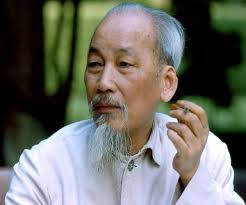

1890 - 1969
“All men are created equal. They are endowed by their Creator with certain inalienable Rights; among these are Life, Liberty, and the pursuit of Happiness.”
-
Early life
- was born as Nguyễn Sinh Cung in 1890
- his father gave him a new name at the age of 10: Nguyễn Tất Thành (Ho)
- He worked as a kitchen helper on a French steamer, the Amiral de Latouche-Tréville, using the alias Văn Ba. The steamer departed on 5 June 1911 and arrived in Marseille, France on 5 July 1911
- He instead decided to begin traveling the world by working on ships and visiting many countries from 1911 to 1917.
- From 1912 to 1913, he may have lived in New York City (Harlem) and Boston, where he claimed to have worked as a baker at the Parker House Hotel
- At various points between 1913 and 1919, Nguyễn Tất Thành (Ho) claimed to have lived in West Ealing and later in Crouch End, Hornsey.
- From 1919 to 1923, Nguyễn Tất Thành (Ho) began to show an interest in politics while living in France, being influenced by his friend and Socialist Party of France comrade Marcel Cachin.
- In Paris he joined the Groupe des Patriotes Annamites under the pseudonym Nguyễn Ái Quốc and first used the name in September during an interview with a Chinese newspaper correspondent.
- In December 1920, Quốc (Ho) became a representative to the Congress of Tours of the Socialist Party of France, voted for the Third International and was a founding member of the French Communist Party.
- In 1923, Nguyễn Ái Quốc (Ho) left Paris for Moscow studied at the Communist University of the Toilers of the East and participated in the Fifth Comintern Congress in June 1924
- in November 1924 arriving in Canton (present-day Guangzhou), China using the name Ly Thuy.
- 1925 - 1938 he was in Thailang - Moscow -Paris - Brussels - Berlin - Switzerland and bakc to China and served as an advisor to the Chinese Communist armed forces.
-
Independence movement
- In 1941, Hồ Chí Minh returned to Vietnam to lead the Việt Minh independence movement.
- It was during this time that he began regularly using the name Hồ Chí Minh, a Vietnamese name combining a common Vietnamese surname (Hồ, 胡) with a given name meaning "Bright spirit" or "Clear will" (from Sino-Vietnamese 志 明: Chí meaning "will" or "spirit" and Minh meaning "bright")
- In April 1945, he met with the OSS agent Archimedes Patti and offered to provide intelligence, asking only for "a line of communication" between his Viet Minh and the Allies.
- Following the August Revolution (1945) organized by the Việt Minh, Hồ Chí Minh became Chairman of the Provisional Government (Premier of the Democratic Republic of Vietnam) and issued a Proclamation of Independence of the Democratic Republic of Vietnam.
- In February 1950, after the successful removal of the French border blockade, (Battle of Route Coloniale 4) he met with Joseph Stalin and Mao Zedong in Moscow after the Soviet Union recognized his government.
- In 1954, the First Indochina War came to an end after the decisive Battle of Dien Bien Phu, where more than 10,000 French soldiers surrendered to the Viet Minh. The subsequent Geneva Accords peace process partitioned North Vietnam at the 17th parallel.
- n 1959, began urging the Politburo to send aid to the Việt Cộng in South Vietnam; a "people's war" on the South was approved at a session in January 1959, and this decision was confirmed by the Politburo in March.
- In 1963, Hồ Chí Minh purportedly corresponded with South Vietnamese President Diem in hopes of achieving a negotiated peace.
- In July 1967, Hồ Chí Minh and most of the Politburo of the Communist Party met in a high-profile conference where they concluded the war had fallen into a stalemate.
- In early 1969, Ho suffered a heart attack and was in increasingly bad health for the rest of the year.
- With the outcome of the Vietnam War still in question, Hồ Chí Minh died of heart failure at his home in Hanoi at 9:47 on the morning of 2 September 1969; he was 79 years old.
- Political profile
- Chairman of the Workers' Party of Vietnam - 19 February 1951 – 2 September 1969
- General Secretary of the Workers' Party of Vietnam - 1 November 1956 – 10 September 1960
- 1st President of the Democratic Republic of Vietnam - 2 September 1945 – 2 September 1969
- 1st Prime Minister of the Democratic Republic of Vietnam - 2 September 1945 – 20 September 1955
- Minister of Foreign Affairs - 28 August 1945 – March 1947
- Full Member of the 2nd and 3rd Politburo - 31 March 1935 – 2 September 1969